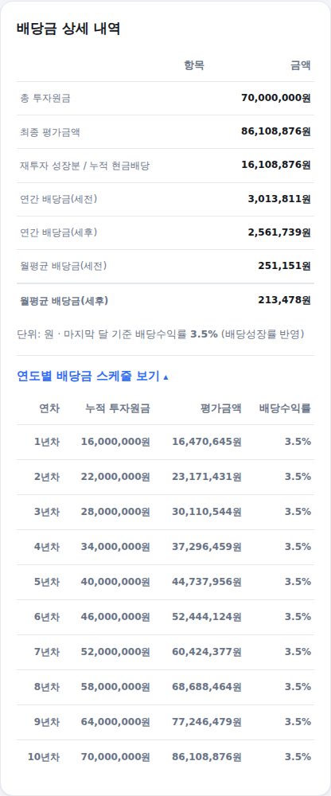
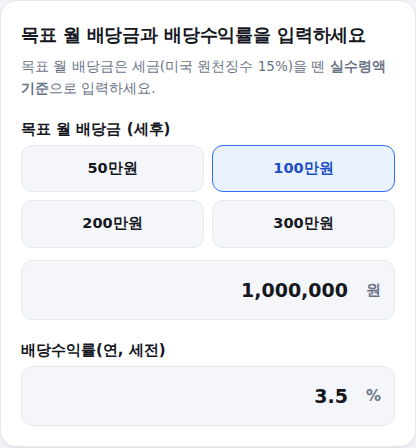

"매달 얼마씩 투자하면 몇 년 뒤 월배당금이 얼마가 될까?", "월 100만원 배당금을 받으려면 얼마가 필요할까?" 배당금 계산기는 이 두 가지 질문에 배당 재투자 시뮬레이션과 목표 배당금 역산 두 가지 모드로 답해드립니다. 쓰는 법은 아래와 같습니다.
-
계산 모드 선택
매달 투자해서 미래 배당금을 알고 싶다면 배당 재투자 시뮬레이션을, 목표 월배당금에 필요한 투자원금을 알고 싶다면 목표 배당금 역산을 선택하세요.
모드 선택 화면
-
(재투자 시뮬레이션) 초기 투자금·월 투자금·배당수익률·재투자 여부 입력
초기 투자금과 월 투자금은 하나를 0으로 두어도 됩니다. 배당수익률은 매입 시점 기준 연간 배당금 ÷ 주가이고, 배당성장률은 주당 배당금이 매년 늘어나는 비율입니다. SCHD처럼 배당이 매년 느는 ETF라면 배당성장률을 10% 안팎으로, 배당이 거의 안 느는 상품이라면 0%로 두세요. 맨 아래에서 받은 배당금을 추가 매수에 쓸지(재투자함), 현금으로만 쌓아둘지(재투자 안 함) 선택합니다.
입력 화면 (기본값: 1,000만원+월 50만원, 배당수익률 3.5%, 10년, 재투자함)
-
예상 월배당금 확인
마지막 달 기준 세전·세후 월배당금과 총 평가금액이 바로 나옵니다.
결과 화면
-
상세 내역과 연도별 스케줄 확인
총 투자원금·최종 평가금액·연간/월간 배당금(세전·세후)을 한눈에 비교할 수 있습니다. "연도별 배당금 스케줄"을 펼치면 연차별로 원금과 배당수익률이 어떻게 늘어나는지 표로 확인할 수 있습니다.

상세 내역 · 연도별 스케줄 화면
-
(목표 배당금 역산) 목표 월배당금·배당수익률 입력
목표 월배당금은 세후(실수령) 기준으로 입력하세요. 배당수익률만 함께 넣으면, 그 목표를 이루는 데 필요한 투자원금이 바로 계산됩니다.

목표 배당금 역산 입력 화면
계산 기준
배당 재투자 시뮬레이션은 주가 변동은 없다고 가정하고, 매월 초 투자금 납입 + 매달 발생하는 배당금의 재투자 여부만 반영합니다. 배당수익률은 배당성장률만큼 매년 복리로 늘어난다고 계산합니다. 목표 배당금 역산은 세후 목표 금액을 미국 원천징수세율 15%로 나눠 세전 필요 배당금을 구한 뒤, 배당수익률로 나눠 필요한 투자원금을 계산합니다.
계산은 참고용이며, 실제 배당수익률·배당성장률·주가는 ETF와 시장 상황에 따라 달라질 수 있습니다.